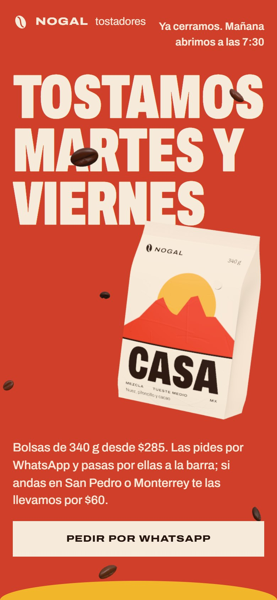
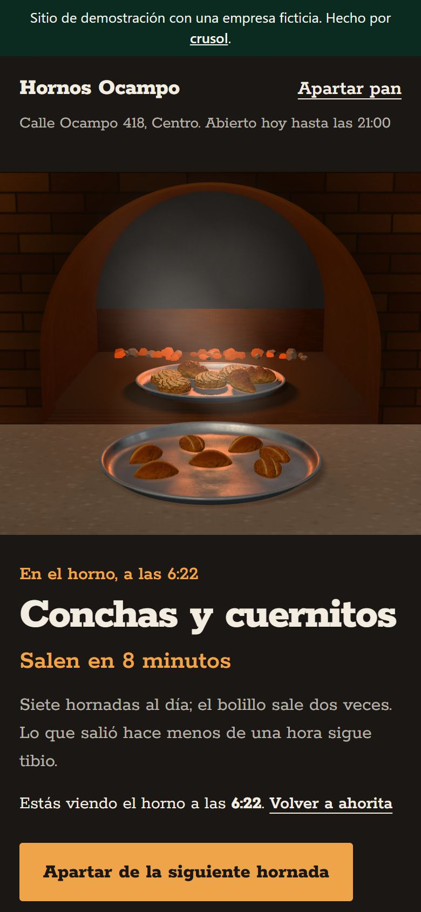
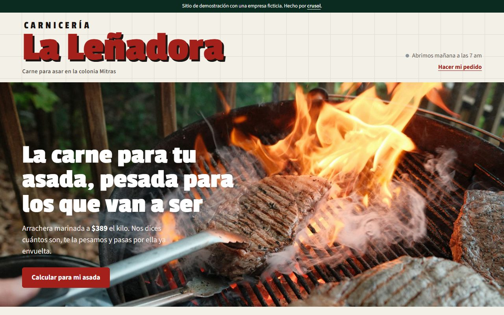
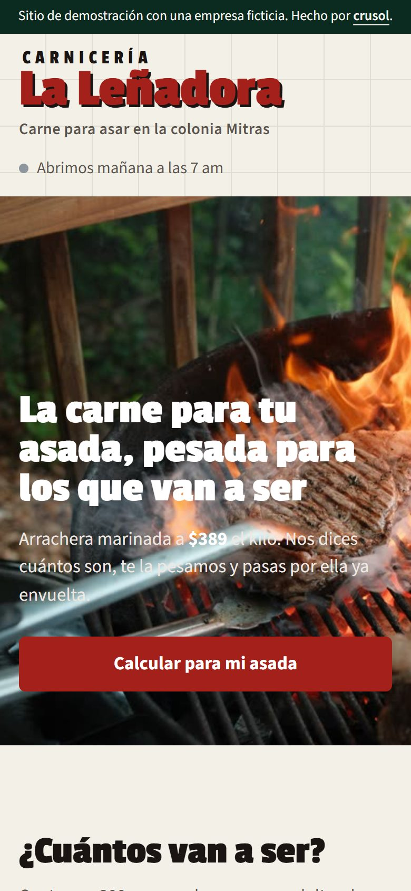
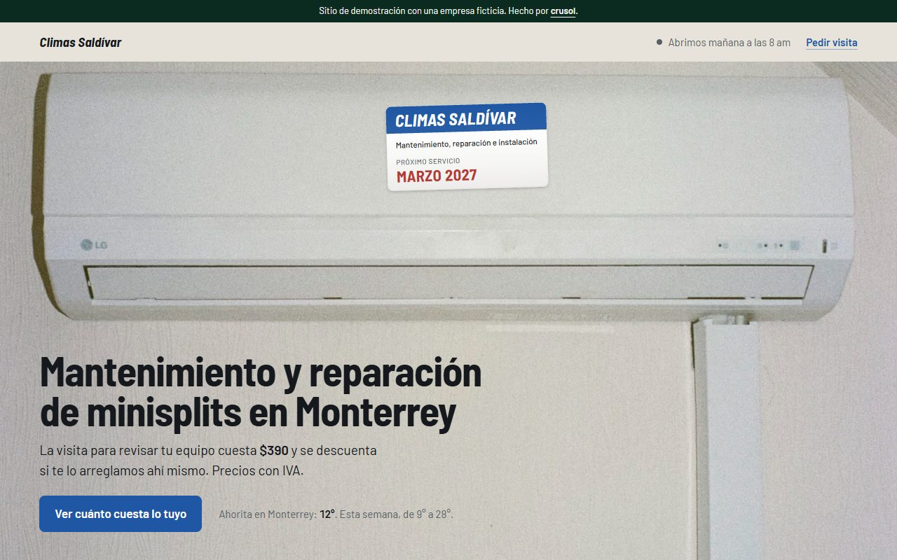
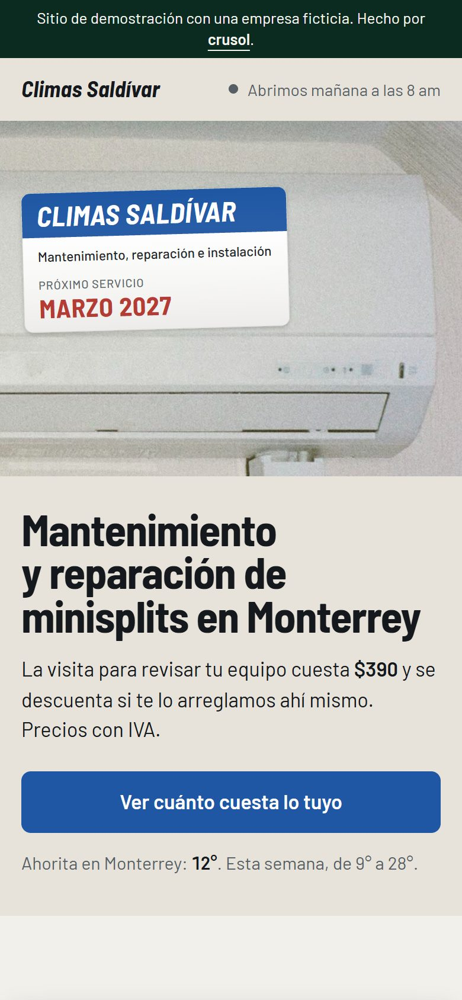
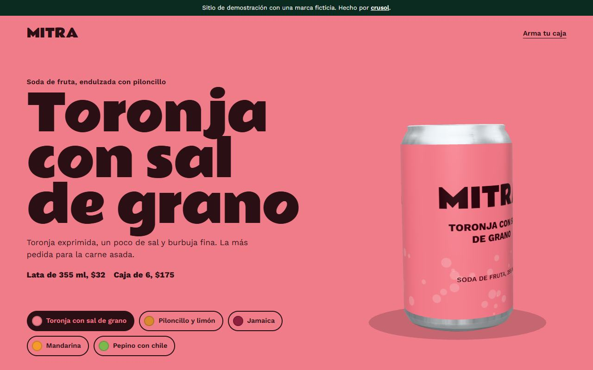
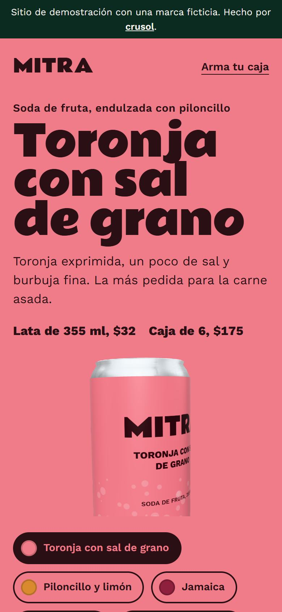
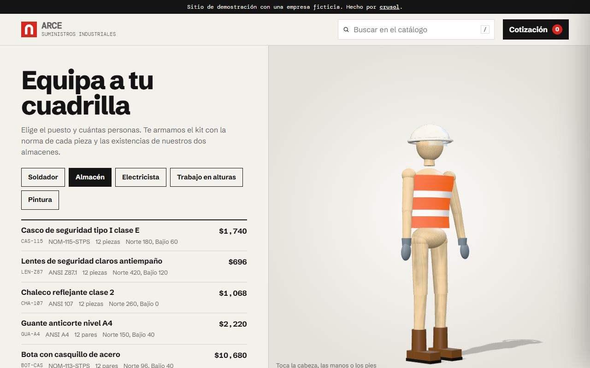

Nogal Tostadores, un café
- Las bolsas y la taza se dibujan en 3D en el navegador y responden al bajar.
- Cada bolsa abre WhatsApp con el pedido ya escrito.
- Horario de hoy calculado con la hora de la ciudad.
- La página completa pesa 0.6 MB.


Hornos Ocampo, una panadería de barrio
- En el horno de ladrillo en 3D, el pan entra pálido y se va dorando con los minutos reales que le faltan.
- Al salir echa vapor; mientras más vapor, más recién salido.
- Una barra con el día del horno: la mueves y ves cómo está a cualquier hora.
- El apartado se escribe a mano en la bolsa de estraza y se manda por WhatsApp.


Carnicería La Leñadora, para la carne asada
- Dices cuántos adultos y niños van a ser, y la carne se reparte entre los cortes que palomeas, de cuarto en cuarto de kilo.
- Una báscula de mostrador con su pantalla roja pesa el pedido; los cortes caen en el plato.
- Calcula solo el carbón, las tortillas y la salsa según la gente.
- Se pide por WhatsApp para recoger, con el día y la hora en que pasas.


Climas Saldívar, para quien da servicio a domicilio
- Escoges qué le pasa a tu minisplit y ves qué suele ser, qué hace el técnico y cuánto cuesta.
- El precio cambia con las toneladas, cuántos equipos y el municipio, y la visita se pide por WhatsApp con todo escrito.
- Lee el pronóstico real de Monterrey: con frío, lo primero es “no calienta”; con calor, “no enfría”.
- La marca va en la calcomanía de servicio, pegada en el equipo, con la fecha del próximo mantenimiento.


Mitra, una marca de sodas
- Cada sabor cambia el color de toda la página y la lata en 3D.
- Armas tu caja de 6 tocando sabores; las latas caen en la caja.
- La caja se pide por WhatsApp con los sabores y el total.
- Lista de tiendas donde hay.


ARCE Suministros, para quien vende a otras empresas
- Eliges el puesto (soldador, almacén, alturas...) y un maniquí de madera en 3D se viste con su equipo.
- El kit sale con la norma de cada pieza, las existencias de dos almacenes y el total para tu cuadrilla.
- Tocas la cabeza, las manos o los pies del maniquí para ver todo lo de esa zona.
- Cotización con flete e IVA, y cuenta regresiva al corte de envío de las 14:00.

¿Y el de tu empresa?
Con tu logo, unas fotos y tus precios te armo una muestra privada para que la pruebes en tu celular antes de decidir. El dominio queda a nombre de tu empresa.